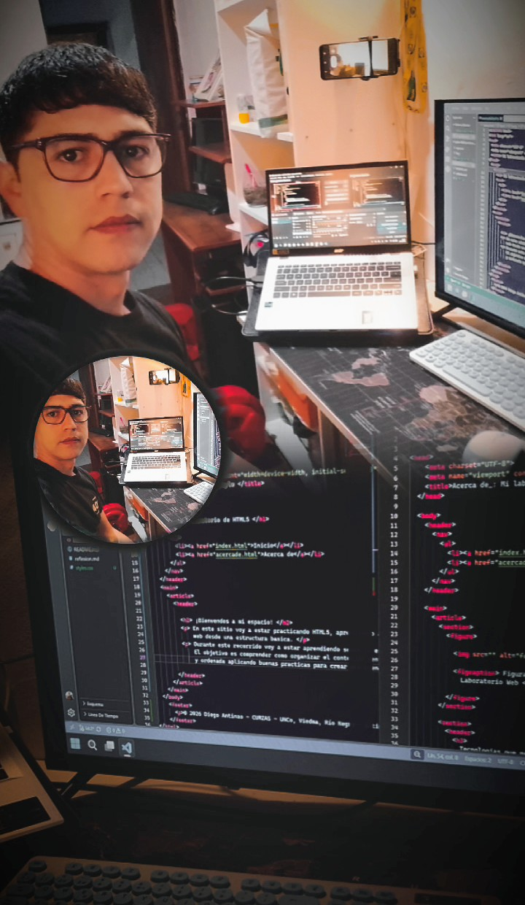

Biografia
Mi nombre es Diego Antinao, tengo 37 años y actualmente estoy estudiando la Tecnicatura en Dessarrrollo Web. Comence este camino con muchas ganas de aprender y descubrir todo lo que se puede crear utilizando la tecnología. Aunque estoy dando mis primeros pasos en programación, cada nuevo tema que aprendo representa un desafío y una oportunidad para seguir creciendo.
Durante este proceso estoy aprendiendo a comprender como se construyen las páginas y apliaciones web, comenzando por sus estructuras y avanzando poco a poco hacia nuevas herramientas y lenguajes. Cada ejercicio y cada proyecto me permiten poner en practica lo aprendido, experimentar, equivocarme y seguir aprendiendo.
